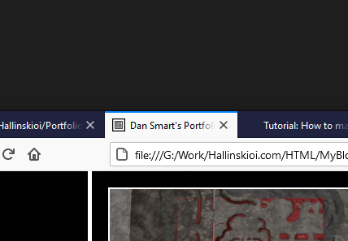
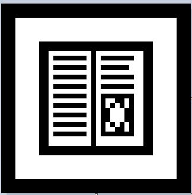
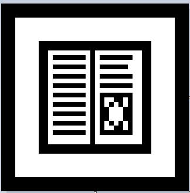

My Tutorials & Blogs

Step One:
With your custom image, make sure it's 40px by 40px, you can scale it in an image editing software of your choice. My icon is based from an upcoming little video game I'm working on. The image must be saved as an .ico file.  Image 1
Step Two:
To insert your image, enter the following HTML code into your head element.
Please note you will need to do this on all pages. This does mean you could have a custom image on every page if you want!
As the image is saved as an .ico file and labelled as the shortcut icon, the browser will take care of the rest!
How to make a Custom Website Icon
Read Time: 2 mins
Making a custom website icon is an easy task once you know how, however throughtout my studying, I've not come across any tutorial on how to do so. So I'm making one.
Tools needed:
- An image measuring 40px by 40px (Your own design would be best!)
- Basic HTML knowledge
Step One:
With your custom image, make sure it's 40px by 40px, you can scale it in an image editing software of your choice. My icon is based from an upcoming little video game I'm working on. The image must be saved as an .ico file.  Image 1
Step Two:
To insert your image, enter the following HTML code into your head element.
< link rel="shortcut icon" href="Imagelocation.ico" />
Please note you will need to do this on all pages. This does mean you could have a custom image on every page if you want!
As the image is saved as an .ico file and labelled as the shortcut icon, the browser will take care of the rest!